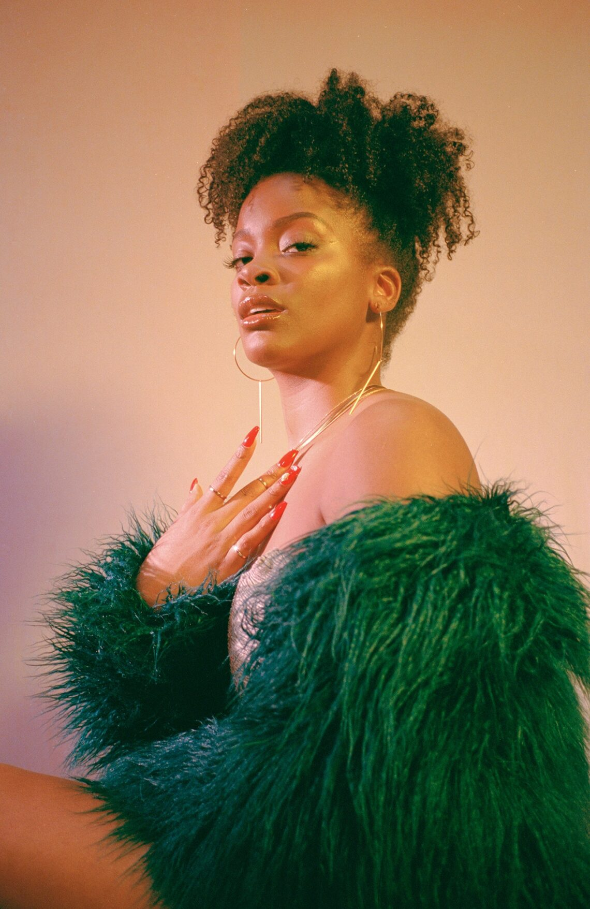
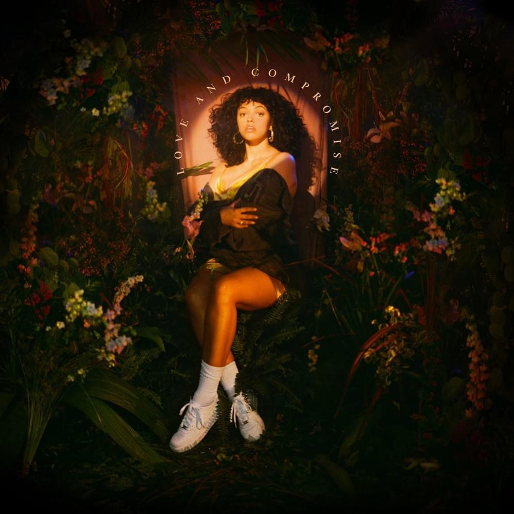
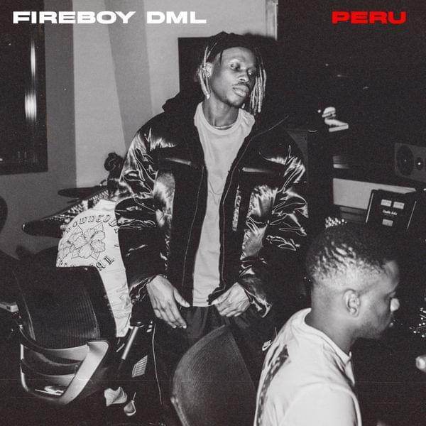

Crazy tings
Crazy tings are happening
Crazy tings are happening
If you need somebody's craze
You fit chop somebody's craze
Try, try, try
I try, try, I just wan' turn my back tonight, tonight
So l'll make it seem, make it seem
I just want to turn my back tonight
Ooh, you know me well, well, well, well, well, well
And you try to tell, tell, tell, tell, tell, tell
Ooh, you try to make my run insane
But you know that you know I'm not the same
I just think I can do better

Shea Butter Baby
Touch me, take me, kiss me
Love me, depress me
Pull up, black truck, ganja
Wrist so blinding, heart so timeless
Wishing, you could meet me, see me, free me
You lost in the shape of my hips
Out there is a moon
If you really down, we can find it
Lost in an alley, make love by a trash can, ayy (Oh, oh, oh, oh)
Out there is a moon (Oh, oh, oh, oh)
And if you really down we can find it
Lost in an alley, make love by a trash can

What you did
English singer Mahalia is gearing up to release her debut album, Love And Compromise on Friday, and she's given us another taste of what to expect.
Her latest single What You Did sees her team up with Ella Mai for a tune that samples Cam'Ron's Oh Boy, and is a modern take on the 2002 smash hit, turning it into a sultry R&B track.

Peru
‘Peru’ points to its author’s Afropop wit. Whether they are constructed around recurring themes of love, dance and struggle held together by catchy melodies, or undergo the soulful retooling Fireboy refers to as ‘Afro-life’, the singer has risen to the occasion. ‘Peru’ is anchored in the former, imbued with infatuation and vulgar lust, but also ambition and success that has led to his globetrotting adventures.
Won ni wan wa mi
Won ni wan wa mi
I'm in San Francisco jamming
Won ni wan wa mi
Won ni wan wa mi
I just flew in from Miami
Woodlawn
Aminé has unleashed the video for his Limbo album cut “Woodlawn.”
An ode to Portland’s Woodlawn Park where he grew up, the rapper returns to the neighborhood, where he and his crew take over his childhood basketball court. We also see clips of Aminé riding ATVs, snowmobiles, and chilling on the couch fitted in Portland Trailblazers gear.